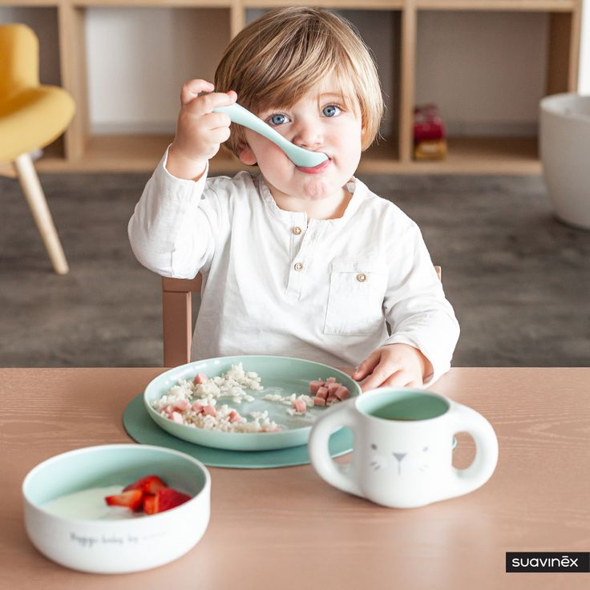
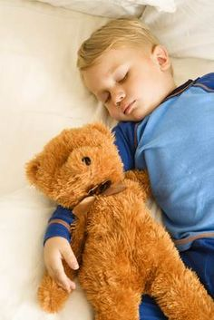

🍽 نصائح لتغذية صحية للرضيع
من 0 إلى 6 أشهر: الرضاعة الطبيعية هي الأفضل، وإن تعذرت فالحليب الصناعي المناسب هو البديل
من 6 أشهر: بدء التنويع بإدخال الخضار والفواكه المهروسة، ثم البروتينات والنشويات تدريجيًا
من 9 إلى 12 شهرًا: تقديم أطعمة متنوعة بقوام مناسب، وتحفيز الطفل على المضغ واستكشاف نكهات جديدة
من 12 شهرًا: طعام شبيه بطعام العائلة مع التنويع والتوازن الغذائي
تجنب: العسل قبل السنة، حليب البقر كمشروب أساسي، الأطعمة القاسية، والمأكولات المصنعة

🛏 نصائح لنوم صحي للرضيع
النوم ضروري لنمو الطفل. لضمان نوم جيد يجب:
اتباع روتين ثابت مثل النوم في نفس التوقيت يوميًا مع طقوس هادئة كحمام دافئ
تهيئة بيئة مناسبة: غرفة هادئة، مظلمة، بدرجة حرارة بين 18-20، وسرير آمن
تنظيم التغذية عبر تقليل الرضعات الليلية بعد 6 أشهر
تعويد الطفل على النوم بمفرده
تجنب النوم في الأحضان أو التعرض للشاشات قبل النوم
💉 المتابعة الطبية والتطعيم للأطفال
الزيارات المنتظمة : لمراقبة النمو والوقاية من المشكلات الصحية
جدول التطعيمات : الالتزام بالمواعيد لحماية الطفل
مراقبة الصحة: استشارة الطبيب عند استمرار الحمى أو فقدان الشهية
النظافة: تعليم الطفل غسل اليدين للوقاية من العدوى
🧼 نصائح لتنظيف الأطفال لصحة أفضل
غسل اليدين: بعد الحمام وقبل الطعام
الاستحمام اليومي بماء دافئ وصابون لطيف
النظافة الفموية مع أول ظهور للأسنان
الملابس النظيفة: تغيير منتظم
تنظيف الألعاب التي تُوضع في الفم